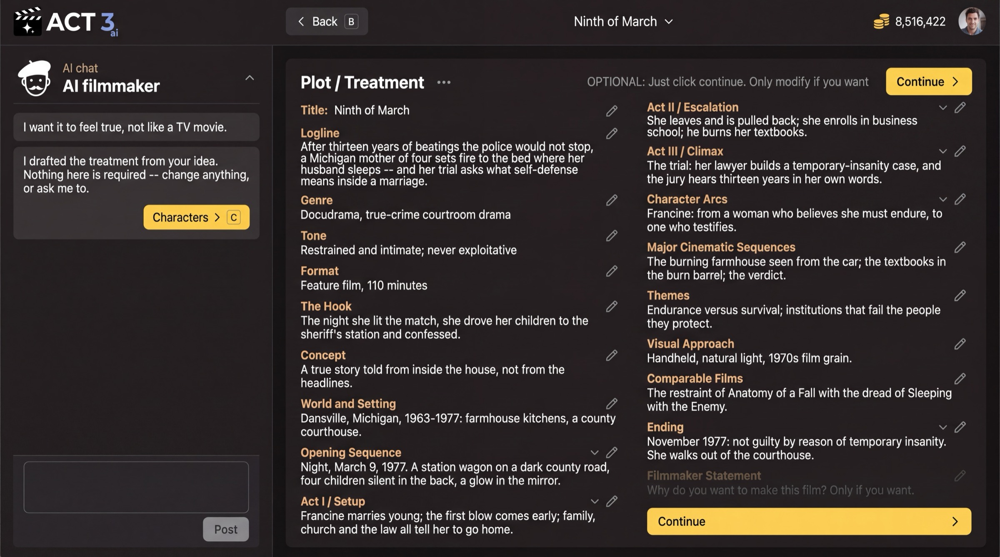

Step 6 of 8
Read the treatment
Your import wrote a treatment: logline, genre, tone, acts and ending. Read it and fix anything that is not your film. Then press Continue; nothing here is required.

What this page is
Plot / Treatment is the story in prose, the way a producer would pitch it: the logline, genre, tone, format, the hook, the world, Act I, Act II and Act III, the character arcs, the big cinematic sequences, themes, visual approach, comparable films and the ending. ACT 3 AI wrote it from your screenplay.
- Each field has a pencil: click it to edit the text.
- Ask the AI filmmaker in the chat to change it for you, for example "Make the tone colder."
- Filmmaker Statement is yours alone: why you want to make this film. Fill it only if you want.
Your decision
The page says it: "OPTIONAL: Just click continue. Only modify if you want." Fix it when the AI misread the story, because later steps lean on it. If it reads true, press Continue (keyboard: C).
Why you go next to Characters
A film is its people. Next you check the cast ACT 3 AI found in your script before anyone is drawn.